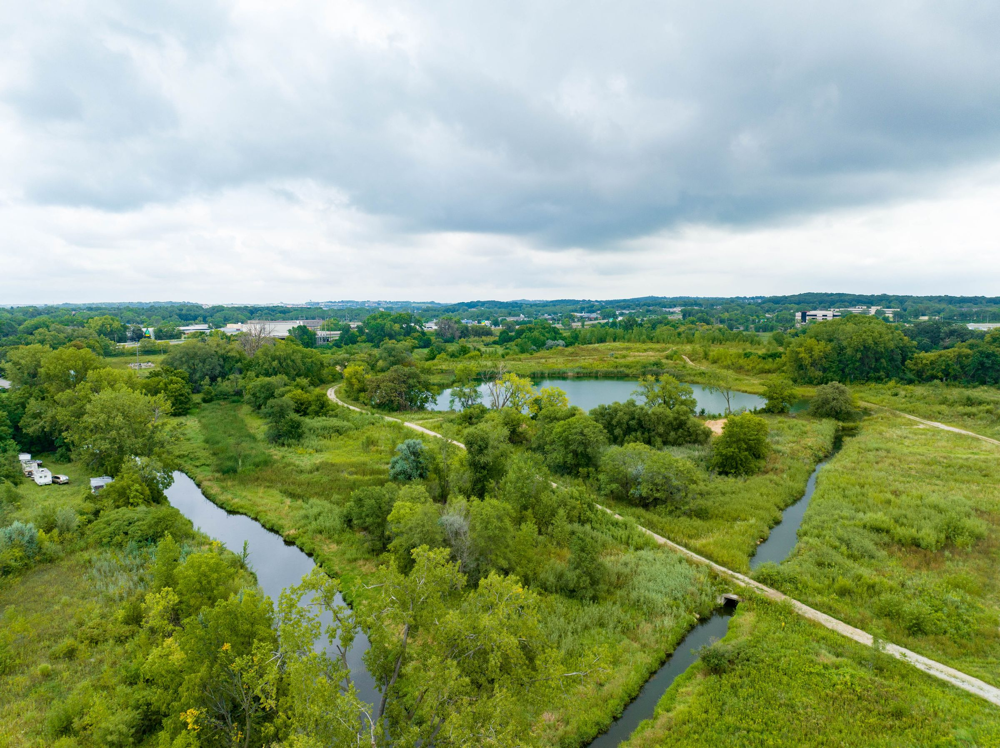
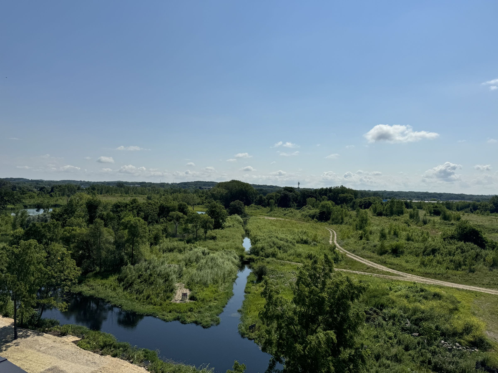

Projects / 01
Starkweather Place
215 N Fair Oaks Avenue, Madison starkweatherplace.com
The restored Starkweather Creek wetlands and trails, seen from the site.
112Apartments
4Stories
4.33acresSite
2.5acresRestored creek frontage
Overview
112 apartments in four stories on 4.33 acres on Madison’s east side, with 2.5 acres of restored Starkweather Creek frontage.
NMD developed Starkweather Place with Stone House Development. The site was put under contract in 2020 in the Town of Blooming Grove, annexed into Madison and rezoned in November 2022. Designed by Potter Lawson and built by McGann Construction, it opened on November 1, 2024, and was 95% leased by mid-2026.
Features
Timeline
- 2020Site put under contract in the Town of Blooming Grove
- ThenAnnexed into the City of Madison
- Nov 2022Rezoned
- Nov 1, 2024Opened
- Mid-202695% leased
At a glance
- Address
- 215 N Fair Oaks Avenue, Madison
- Apartments
- 112
- Height
- Four stories
- Site
- 4.33 acres
- Design
- Potter Lawson
- Construction
- McGann Construction
- Joint venture
- NMD with Stone House Development
- Website
- starkweatherplace.com

